In-game captures use the same viewpoint, weather and time in both builds. Brookstead and the Alderbridge patrol camp already used the chosen concept models in the first image. Select a pair to inspect it at full size.
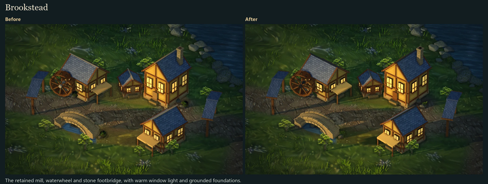
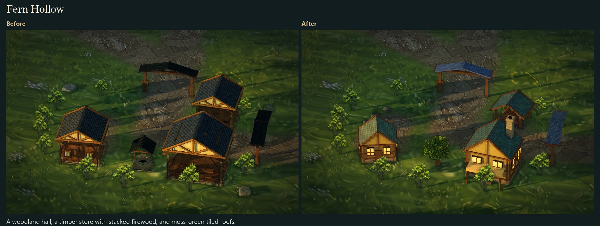
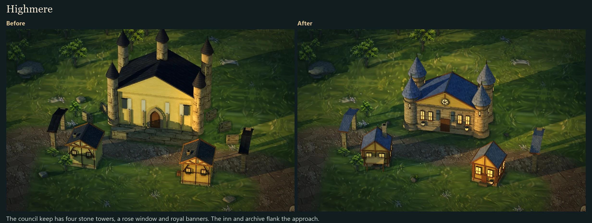
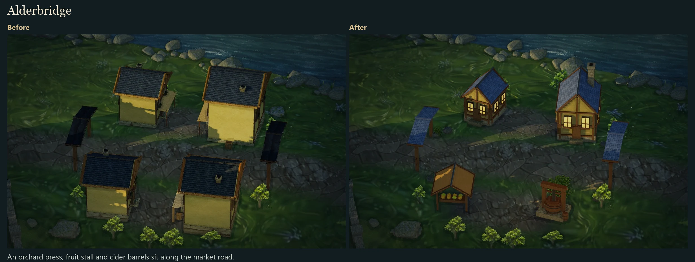
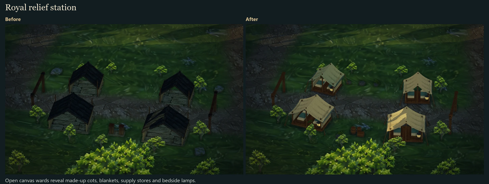
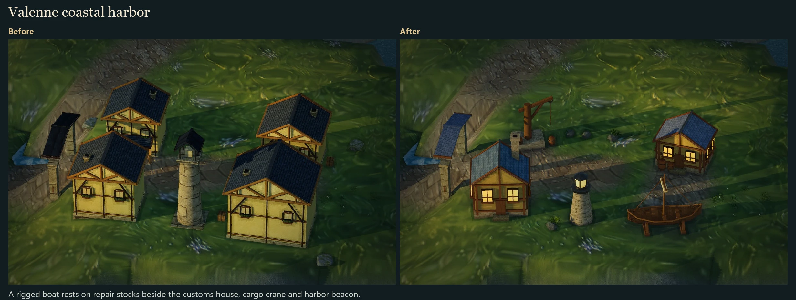
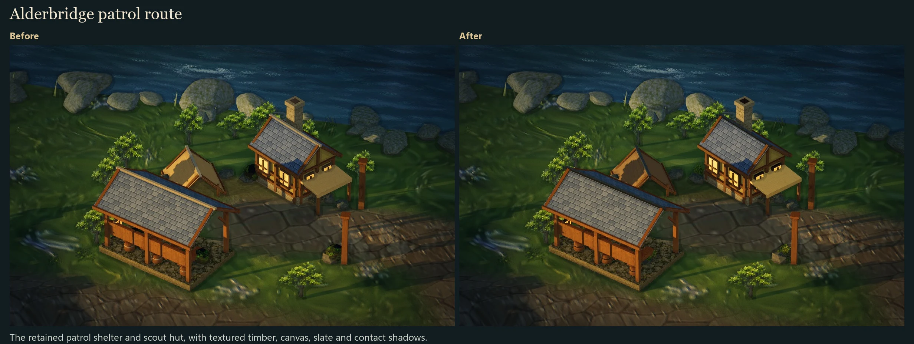
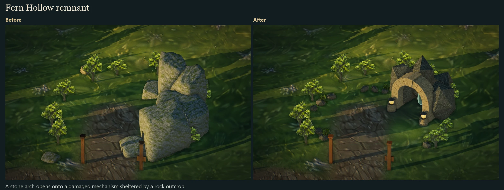
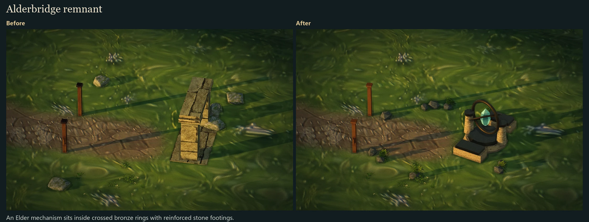
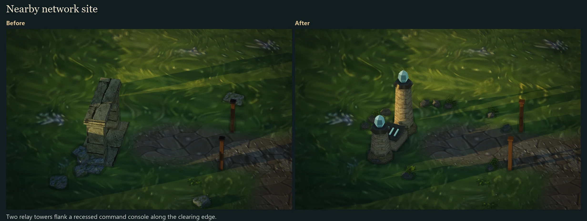
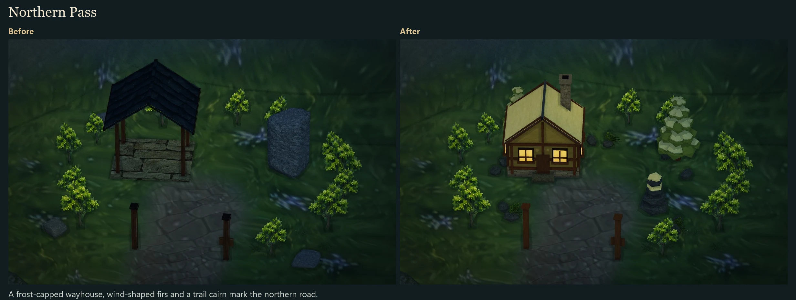
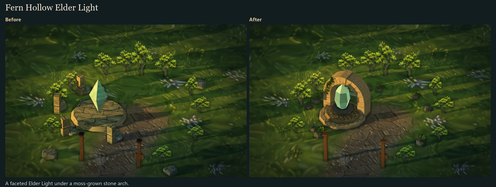
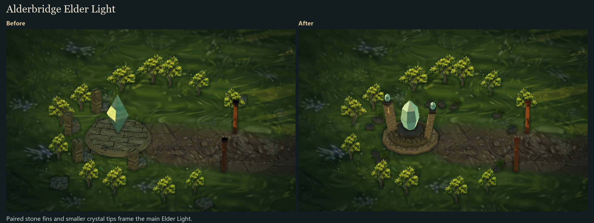
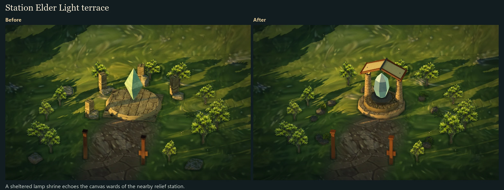
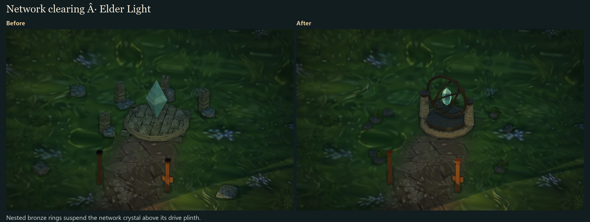
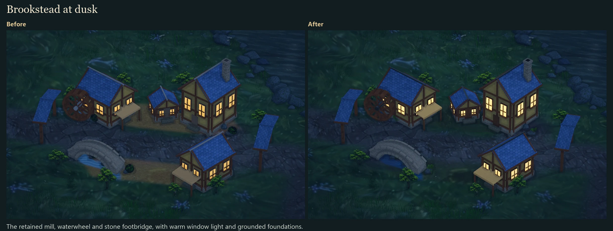
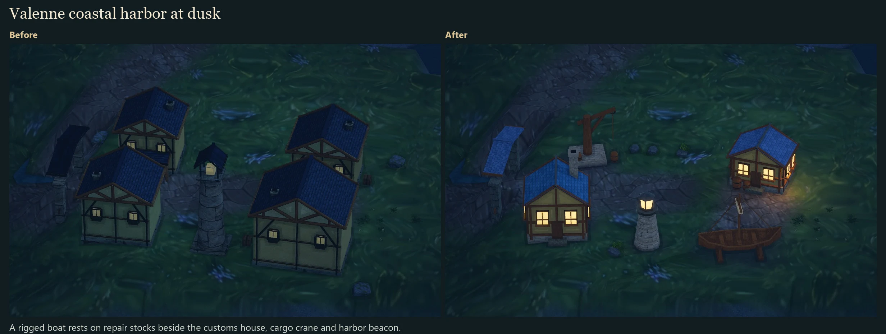
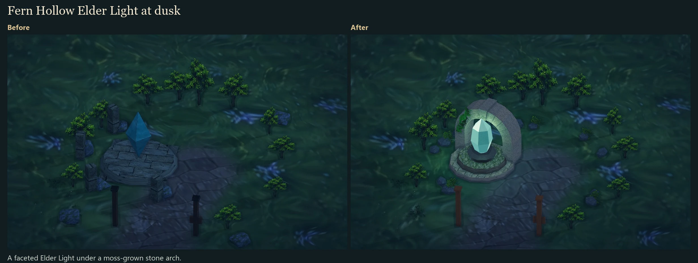